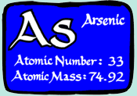

Unit 3: Quantities in Chemical Reactions
Activity 1: Chemistry in Science, Technology, Society and the Environment
Assignment
 Assignment 1
Assignment 1
 Complete the following assignment and submit your work to the dropbox.
Complete the following assignment and submit your work to the dropbox.
Before you upload your file, ensure that your name appears on the top of every page of your document.
Required Reading
|
Read What Monitoring Networks Measure to get some background regarding pollutants and their respective monitoring. |
The importance of maintenance in ensuring quantitative accuracy in monitoring pollutants is critical for the health of society and the environment. No or inefficient monitoring of pollutant levels from industrial emissions will have significant short term and long term repercussions on the environment.
The above article identifies major categories of pollutants and issues surrounding their sources and detection. It also offers insight into future decisions involving the effects and monitoring efforts of pollutants.
For this assignment you will produce a pamphlet focusing on a combustion product or another product resulting from an industrial process. Possible topics include: sulphur species, nitrogen species, dioxins, furans, heavy metals, or organic pollutants.
You will research the following areas connected to your chosen product and include the following:
- chemical composition, physical and chemical properties;
- major industries that produce significant levels of the pollutant;
- industrial reaction(s) resulting in the production of the pollutant;
- industrial efforts in minimizing pollutant levels;
- acceptable emission levels of the pollutant;
- analysis of the importance of accurately monitoring the pollutant's levels and subsequent effects of the pollutant on human health and the environment.
Creating your pamphlet:
- Research your information by finding it in other sources. For example: the Internet, books, magazines, journals.
- Organize and classify your information using charts or graphic organizers.
Write an introduction to your topic. - Make sure that there is a sequence and a logical order of information and ideas are presented in the pamphlet.
- Decide how you are going to present the information in your pamphlet.
- Write a conclusion that summarizes the main topics, ideas and suggestion.
Credit your sources in a properly written bibliography.
Your pamphlet should include the following:
- Clear identification of the product of the chemical reaction(s).
- An introduction and conclusion.
- Importance of monitoring pollutant levels and acceptable emission levels of the pollutant.
- Industrial efforts in minimizing pollutant emissions.
- A separate, properly written bibliography. Please check with your teacher regarding the format that he or she prefers.
Rubric

|
View the rubric for this assignment. View the long description of the rubric for this assignment. |
|---|
Resources
Assignment 2
Complete the following assignment and submit your work to the dropbox.
Before you upload your file, ensure that your name appears on the top of every page of your document.
Required Reading
|
Read What Monitoring Networks Measure to get a background in calculating dosages when exposed to contaminants. |
|  |
In areas where there has been mining for gold, arsenic levels have been found in soil samples. Concern for arsenic levels in the local vegetation and the potential for the transference of arsenic in the food chain via free-range chickens, is elevated when chicken products become available in local markets and via other retailers. |
Scenario:
You are conducting a study to determine the levels of arsenic in chicken for individuals of different masses. The TRV for chicken is 0.024 ?g As/kg BW per day.
You are required to do the following:
- Survey ten people who tend to consume chicken and estimate the mass of chicken consumed over a period of one week.
- Record the individuals' body weight, sex and age. Participants in this survey will remain anonymous by being given designations such as Person A, Person B, etc;
- Calculate the dose of arsenic for each person per day, week and year.
- Calculate the RMWI for each person.
- Present your findings in tabular form with the following column titles:
Person, Age, Sex, Weight (kg), Mass (g) of Chicken Consumed per Week, Mass (g) of Chicken Consumed per Day, Mass of Chicken Consumed per Year, Dose of Arsenic per Day, Dose of Arsenic per Week, and Dose of Arsenic per Year. - Show one set of representative calculations for Dose and RMWI.
- Answer the following questions:
-
- Examine the RMWI value for each person. Reflect and comment on peoples' chicken consumption habits and determine if these values are realistic and valid.
- What assumptions could be made in calculating the "per week" and "per year" mass of chicken consumed?
- Dose values are in micrograms. Explain why values might not be expressed in milligrams or grams?
- Should people be concerned with the presence of arsenic in chicken? Analyze your data and calculated values for logic, accuracy, reliability, adequacy, and bias. Offer a brief argument for or against the consumption of chicken due to the presence of arsenic.
Rubric
|
|
View the rubric for this assignment. View the long description of the rubric for this assignment. |
|---|
Resources
Assignment 3
Complete the following assignment and submit your work to the dropbox.
Before you upload your file, ensure that your name appears on the top of every page of your document.
Required Reading
|
Read Pharmacy Careers to read about a career in pharmacology. |
Your assignment is to choose, research, and report on a chemistry-related career. Present your findings in poster form and include the following:
- An inventory of the education needed to pursue this career.
- Description of the variety of tasks performed in this career.
- Calculations and examples found in this career.
- Employment possibilities.
- Benefits and challenges connected to career.
- Employment skills necessary for job placement.
- Analysis of information leading to a general assessment about the career.
Rubric
|
|
View the rubric for this assignment. View the long description of the rubric for this assignment. |
|---|
Resources
This is a disclaimer. External Resources will open in a new window. Not responsible for external content.
Unless otherwise indicated, all images in this Activity are from the public domain or are © clipart.com or Microsoft clipart and are used with permission.